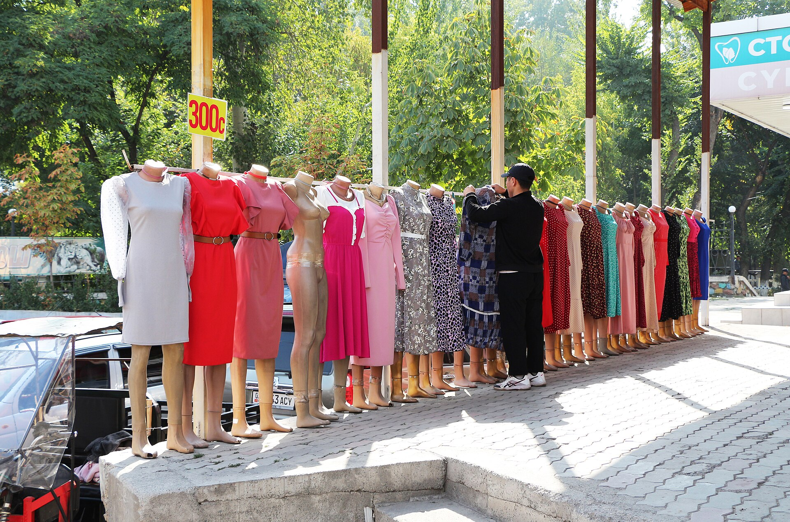

Qirgʻizistonda bolalar mehnati: qashshoqlik va nazoratdagi boʻshliqlar
Janubiy Qirgʻizistonning Manas shahridagi bozorlarda oʻnlab bola ishlab yurganicha topildi. Milliy soʻrovga koʻra, 5–17 yoshli bolalarning deyarli beshdan biri mehnatga jalb qilingan.

Times of Central Asia nashrining 2026-yil 4-noyabrdagi maqolasiga koʻra, janubiy Qirgʻizistonning Manas shahridagi bozorlarda oʻnlab bola ishlab yurganicha topildi — mahsulot sotayotgan yoki savdogarlarga yuk tashiyotgan. Politsiya xodimlari va ijtimoiy ishchilar bolalarning ota-onalari va vasiylari bilan suhbatlashib, ogohlantirish berish bilan cheklandi; birorta mansabdor shaxs nomi yoki jarima qoʻllanilgani koʻrsatilmagan. (Manas — 2025-yilda rasman shu nomga oʻzgartirilgan sobiq Jalolobod shahri; viloyat esa hamon Jalolobod deb ataladi.) Bu aniq voqea faqat bitta manbada — TimesCAda — xabar qilingan.
Raqamlar nimani koʻrsatadi
Qirgʻiziston Milliy statistika qoʻmitasi Yunisef koʻmagida oʻtkazgan 2023-yilgi soʻrovga koʻra, mamlakatda 5–17 yoshli bolalarning 19,6 foizi mehnatga jalb qilingan. Hududlar boʻyicha tafovut katta: Jalolobod viloyatida 24%, Naryn viloyatida 31%, Bishkek shahrida esa 5%. Qashshoqlik asosiy omil: eng kam taʼminlangan oilalarda bolalar mehnati 26 foizni, eng badavlat oilalarda esa atigi 8 foizni tashkil etadi. Oʻgʻil bolalar orasida koʻrsatkich 23%, qizlar orasida 16%; bolalarning 15 foizi xavfli sharoitlarda ishlaydi.
Nazoratdagi boʻshliq
Qirgʻiziston Mehnat kodeksi umumiy ishlash yoshini 16 deb belgilaydi (6- va 18-moddalar), xavfli ishlar uchun esa 18. Biroq AQSh Mehnat vazirligining tahliliga koʻra, bu himoyalar shartnomasiz ishlaydigan bolalarga — oilaviy biznes, dehqonchilik va bozor savdosiga — tatbiq etilmaydi, bu esa qonundagi asosiy boʻshliq. Nazorat ham kuchsiz: TimesCA maʼlumotiga koʻra, taxminan 2,9 million kishilik ishchi kuchi uchun 2025-yilda bor-yoʻgʻi 28 mehnat inspektori boʻlgan; AQSh Mehnat vazirligi tavsiya etgan son — 144. 2025-yilda 1 173 ta tekshiruv oʻtkazilib, 1 885 ta mehnat qonunchiligi buzilishi aniqlangan, biroq ulardan nechtasi bolalar mehnatiga oid ekani alohida ajratilmagan.

Qashshoqlik va migratsiya
Bolalar mehnatining asosiy sababi — qashshoqlik: kam taʼminlangan oilalarda u badavlat oilalarga qaraganda uch barobar koʻp uchraydi. Mehnat migratsiyasi esa holatni ogʻirlashtiradi: AQSh Mehnat vazirligi hisobotida taʼkidlanishicha, ota-onasi chet elga ishga ketgan bolalar bozorlarda mehnatga jalb etilgani va odam savdosi xavfi ostida qolishi qayd etilgan.
Rasmiy hujjat tili
AQSh Mehnat vazirligining 2023-yilgi hisobotida shunday yoziladi: «Chet elga ishga ketgan ota-onalarning bolalari bozorlarda bolalar mehnatiga jalb qilingani aniqlangan». Hisobotda nomlab oʻtilgan sohalar — dehqonchilik (paxta, tamaki, chorvachilik) va xizmat koʻrsatish (bozorlarda yuk tashish, poyabzal tozalash, oziq-ovqat sotish). Qirgʻiziston bolalar mehnatining eng ogʻir shakllarini bartaraf etishda AQSh Mehnat vazirligi tomonidan «minimal yutuq» bahosi bilan baholangan.